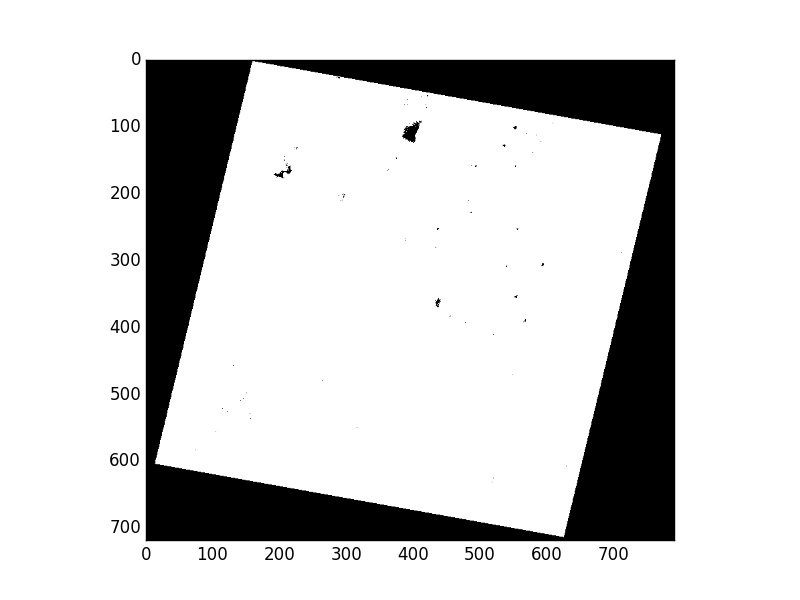

Nodata Masks¶
Nodata masks allow you to identify regions of valid data values. In using Rasterio, you’ll encounter two different kinds of masks.
One is the the valid data mask from GDAL, an unsigned byte array with the same number of rows and columns as the dataset in which non-zero elements (typically 255) indicate that the corresponding data elements are valid. Other elements are invalid, or nodata elements.
The other kind of mask is Numpy’s masked array which has the inverse sense: True values in a masked array’s mask indicate that the corresponding data elements are invalid. With care, you can safely navigate convert between the two mask types.
Consider Rasterio’s RGB.byte.tif test dataset. It has 718 rows and 791 columns of pixels. Each pixel has 3 8-bit (uint8) channels or bands. It has a trapezoid of image data within a rectangular background of 0,0,0 value pixels.

Metadata in the dataset declares that values of 0 will be interpreted as invalid data or nodata pixels. In, e.g., merging the image with adjacent scenes, we’d like to ignore the nodata pixels and have only valid image data in our final mosaic.
Let’s look at the two kinds of masks and their inverse relationship in the context of RGB.byte.tif.
>>> import rasterio
>>> src = rasterio.open("tests/data/RGB.byte.tif")
>>> src.shape
(718, 791)
>>> src.count
3
>>> src.dtypes
('uint8', 'uint8', 'uint8')
>>> src.nodatavals
(0.0, 0.0, 0.0)
>>> src.nodata
0.0
Reading dataset masks¶
For every band of a dataset there is a mask. These masks can be had as arrays
using the dataset’s read_masks()` method. Below, msk is the valid data
mask corresponding to the first dataset band.
>>> msk = src.read_masks(1)
>>> msk.shape
(718, 791)
>>> msk
array([[0, 0, 0, ..., 0, 0, 0],
[0, 0, 0, ..., 0, 0, 0],
[0, 0, 0, ..., 0, 0, 0],
...
[0, 0, 0, ..., 0, 0, 0],
[0, 0, 0, ..., 0, 0, 0],
[0, 0, 0, ..., 0, 0, 0]], dtype=uint8)
This 2D array is a valid data mask in the sense of GDAL RFC 15. The 0 values in its
corners represent nodata regions. Zooming in on the interior of the mask
array shows the 255 values that indicate valid data regions.
>>> msk[200:205,200:205]
array([[255, 255, 255, 255, 255],
[255, 255, 255, 255, 255],
[255, 255, 255, 255, 255],
[255, 255, 255, 255, 255],
[255, 255, 255, 255, 255]], dtype=uint8)
Displayed using Matplotlib’s imshow(), the mask looks like this:
Wait, what are these 0 values in the mask interior? This is an example of
a problem inherent in 8-bit raster data: lack of dynamic range. The dataset
creator has said that 0 values represent missing data (see the
nodatavals property in the first code block of this document), but some of
the valid data have values so low they’ve been rounded during processing to
zero. This can happen in scaling 16-bit data to 8 bits. There’s
no magic nodata value bullet for this. Using 16 bits per band helps, but you
really have to be careful with 8-bit per band datasets and their nodata values.
Writing masks¶
Writing a mask that applies to all dataset bands is just as straightforward:
pass an ndarray with True (or values that evaluate to True to indicate
valid data and False to indicate no data to write_mask(). Consider a
copy of the test data opened in “r+” (update) mode.
>>> import shutil
>>> import rasterio
>>> tmp = shutil.copy("tests/data/RGB.byte.tif", "/tmp/RGB.byte.tif")
>>> src = rasterio.open(tmp, mode="r+")
To mark that all pixels of all bands are valid (i.e., to override nodata metadata values that can’t be unset), you’d do this.
>>> src.write_mask(True)
>>> src.read_masks(1).all()
True
No data have been altered, nor have the dataset’s nodata values been changed. A new band has been added to the dataset to store the valid data mask. By default it is saved to a “sidecar” GeoTIFF alongside the dataset file. When such a .msk GeoTIFF exists, Rasterio will ignore the nodata metadata values and return mask arrays based on the .msk file.
$ ls -l copy.tif*
-rw-r--r--@ 1 sean staff 1713704 Mar 24 14:19 copy.tif
-rw-r--r-- 1 sean staff 916 Mar 24 14:25 copy.tif.msk
Can Rasterio help fix buggy nodata masks like the ones in RGB.byte.tif? It certainly can. Consider a fresh copy of that file.
>>> src.close()
>>> tmp = shutil.copy("tests/data/RGB.byte.tif", "/tmp/RGB.byte.tif")
>>> src = rasterio.open(tmp, mode="r+")
This time we’ll read all 3 band masks (based on the nodata values, not a .msk GeoTIFF) and show them as an RGB image (with the help of numpy.dstack()):
>>> msk = src.read_masks()
>>> show(np.dstack(msk))
Colored regions appear where valid data pixels don’t quite coincide. This is, again, an artifact of scaling data down to 8 bits per band. We’ll begin by constructing a new mask array from the logical conjunction of the three band masks we’ve read.
>>> new_msk = (msk[0] & msk[1] & msk[2])
>>> show(new_msk)
Now we’ll use sieve() to shake out the small buggy regions of the mask. I’ve
found the right value for the size argument empirically.
>>> from rasterio.features import sieve
>>> sieved_msk = sieve(new_msk, size=800)
>>> show(sieved_msk)
Last thing to do is write that sieved mask back to the dataset.
>>> src.write_mask(sieved_msk)
>>> src.close()
The result is a properly masked dataset that allows some 0 value pixels to be considered valid.
Numpy masked arrays¶
If you want, you can read dataset bands as numpy masked arrays.
>>> src = rasterio.open("tests/data/RGB.byte.tif")
>>> blue = src.read(1, masked=True)
>>> blue.mask
array([[ True, True, True, ..., True, True, True],
[ True, True, True, ..., True, True, True],
[ True, True, True, ..., True, True, True],
...
[ True, True, True, ..., True, True, True],
[ True, True, True, ..., True, True, True],
[ True, True, True, ..., True, True, True]], dtype=bool)
As mentioned earlier, this mask is the inverse of the GDAL band mask. To get a mask conforming to GDAL RFC 15, do this:
>>> msk = (~blue.mask * 255).astype('uint8')
You can rely on this Rasterio identity for any integer value N.
>>> N = 1
>>> (~src.read(N, masked=True).mask * 255 == src.read_masks(N)).all()
True
Dataset masks¶
Sometimes a per-band mask is not appropriate. In this case you can either
construct a mask out of the component bands (or other auxillary data) manually
or use the Rasterio dataset’s src.dataset_mask() function. This returns
a 2D array with a GDAL-style mask determined by the following criteria,
in order of precedence:
If a .msk file, dataset-wide alpha or internal mask exists, it will be used as the dataset mask.
If a 4-band RGBA with a shadow nodata value, band 4 will be used as the dataset mask.
If a nodata value exists, use the binary OR (|) of the band masks
If no nodata value exists, return a mask filled with all valid data (255)
Note that this differs from read_masks and GDAL RFC15 in that it applies per-dataset, not per-band.
Nodata representations in raster files¶
The storage and representation of nodata differs depending on the data format and configuration options. While Rasterio provides an abstraction for those details when reading, it’s often important to understand the differences when creating, manipulating and writing raster data.
Nodata values: the
src.nodatavalue is used to define which pixels should be masked.Alpha band: with RGB imagery, an additional 4th band (containing a GDAL-style 8-bit mask) is sometimes provided to explictly define the mask.
Internal mask band: GDAL provides the ability to store an additional boolean 1-bit mask that is stored internally to the dataset. This option relies on a GDAL environment with
GDAL_TIFF_INTERNAL_MASK=True. Otherwise the mask will be written externally.External mask band: Same as above but the mask band is stored in a sidecar
.mskfile (default).